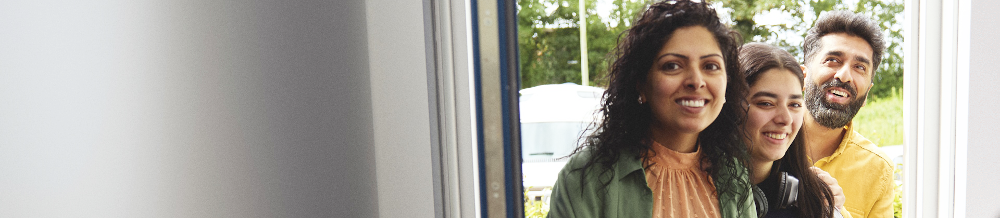

<!DOCTYPE html>
<html lang="nl"></html>
<head>
	<meta charset="UTF-8">
	<meta name="viewport" content="width=device-width, initial-scale=1.0">
	<title>Mijn Eerste Webpagina</title>
	<link rel="stylesheet" href="styles/style.css">
</head>

<body>
	<header>
		<!-- Hier staat styling in de HTML, ik weet dat dat niet mag. Is voor het gemak even zo. -->
		<nav style="background-color: lightblue;">
			<a href="index.html">
				<!-- Hier staat styling in de HTML, ik weet dat dat niet mag. Is voor het gemak even zo. -->
				
			</a>
			<button>Inloggen</button>
			<!-- <ul>
				<li></li>
				<li></li>
				<li></li>
				<li></li>
			</ul> -->
		</nav>

		<h1>Thuispagina ASN-Bank</h1>
		<p class="ZichtbareH1">Droom je van je 1e koophuis?</p>
		<!-- Hier staat styling in de HTML, ik weet dat dat niet mag. Is voor het gemak even zo. -->
		
		<button>Ontdek je mogelijkheden</button>
		<!-- Hier staat styling in de HTML, ik weet dat dat niet mag. Is voor het gemak even zo. -->
		<a href="index.html" style="display: flex; align-items: center; gap: 8px;">Een mooiere toekomst met ASN Bank </a>

		<h2>Waar kunnen we je mee helpen?</h2>
		<div class="zoekbalk">
			<input type="search" placeholder="Zoek naar...">
			<button> <svg xmlns="http://www.w3.org/2000/svg" viewBox="0 0 512 512" fill="#000"><path d="M508.5 468.9L387.1 347.5c-2.3-2.3-5.3-3.5-8.5-3.5h-13.2c31.5-36.5 50.6-84 50.6-136C416 93.1 322.9 0 208 0S0 93.1 0 208s93.1 208 208 208c52 0 99.5-19.1 136-50.6v13.2c0 3.2 1.3 6.2 3.5 8.5l121.4 121.4c4.7 4.7 12.3 4.7 17 0l22.6-22.6c4.7-4.7 4.7-12.3 0-17zM208 368c-88.4 0-160-71.6-160-160S119.6 48 208 48s160 71.6 160 160-71.6 160-160 160z"/></svg></button>
		</div>
	</header>
	
	<main>
		<section>
			<article>
				
				<h2>Een droomhuis, zonder slapeloze nachten</h2>
				<p>Je hebt je droomhuis gezien en zit vol vragen. Hoeveel kan ik lenen, hoe hoog staat de rente, wat worden mijn maandlasten? Breng jouw toekomstdromen dichterbij met een hypotheek van ASN Bank.</p>
				<a href="index.html"></a>
			</article>
		</section>
		
		<section>
			<article>
				<ul>
					<li>
						<h2>Betalen</h2>
						<p>Betalen met ASN Bank is makkelijk. Je krijgt hulp bij het overstappen en met de handige ASN-app regel je eenvoudig en snel je bankzaken.</p>
						<a href="index.html">Meer informatie </a>
					</li>
					<li>
						<h2>Beleggen</h2>
						<p>Beleggen met ASN Bank is streven naar rendement voor jezelf én voor de wereld.</p>
						<p>Met beleggen loop je risico en maak je kosten. Je kunt je inleg of een deel daarvan verliezen.</p>
						<a href="index.html">Meer informatie </a>
					</li>
					<li>
						<h2>Hypotheek</h2>
						<p>Koop je binnenkort een huis? Met onze hypotheek kan je kiezen tussen meerdere hypotheekvormen.</p>
						<a href="index.html">Meer informatie </a>
					</li>
					<li>
						<h2>Sparen</h2>
						<p>Sparen met ASN Bank heeft veel voordelen. Onze spaarproducten zijn transparant en veilig. Je krijgt een vaste of variabele rente en met je spaargeld draag je bij aan onze duurzame missie.</p>
						<a href="index.html">Meer informatie </a>
					</li>
					<li>
						<h2>Zakelijk</h2>
						<p>Betalen, sparen, beleggen en lenen. Met onze zakelijke producten bankier je bij een bank die respect heeft voor mens, dier en natuur en draag je indirect bij aan een duurzamere wereld.</p>
						<a href="index.html">Meer informatie </a>
					</li>
					<li>
						<h2>Verzekeren</h2>
						<p>Je huis, je inboedel verzekeren of een aansprakelijkheidsverzekering afsluiten? Dat kan ook via ASN Bank.</p>
						<a href="index.html">Meer informatie </a>
					</li>
				</ul>
			</article>
		</section>

		<article>
			<h2>Loop eens binnen in een nieuw ASN-kantoor</h2>
			<p>Soms is het fijn om met een adviseur te praten. Bijvoorbeeld over een hypotheek, over sparen of beleggen of over het opbouwen van aanvullend pensioen. Dat kan vanaf nu in een van onze gloednieuwe ASN-kantoren.</p>
			<a href="index.html">Vind een ASN-adviseur bij jou in de buurt </a>
	</main>
	
	<footer>

	</footer>
</body>
</html>